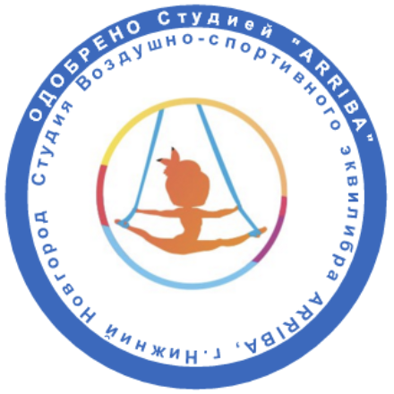

В разработке...
Режим занятий: 1 час по 2 раза в неделю.
Возраст занимающихся: с 5 лет
Сроки реализации программы: с 2021 года
Разработчик: Агапова Екатерина — главный тренер и руководитель студии ARRIBA
Среди обязательных индивидуальных упражнений на воздушных полотнах выделяются:
❊ подъемы — вспомогательные, но в то же время важные движения, позволяющие ученику выполнять трюки на высоте. Выделяют несколько видов подъемов в зависимости от техники выполнения. Сами подъемы осуществляются силой и с разных направлений, в зависимости от ведущей ноги;
❊ шпагаты — упражнения на сохранение равновесия, представляющие собой положение тела, при котором расставленные в противоположных направлениях ноги находятся на одной линии, а внутренние линии бёдер образуют угол в 180 градусов. Для исполнения шпага требуется высокий уровень подвижности в суставах;
❊ балансы (равновесия) — относительно небольшой круг упражнений, для которых основой является сохранение определенной позы на одной ноге при разных положениях ноги свободной. При этом требуется очень хорошая подвижность в тазобедренных и суставах позвоночника и вестибулярная устойчивость.
Начальная подготовка 1 года обучения (первые 3 месяца занятий)
Основные задачи этапа:
1. Изучение задатков и способностей учеников для занятий воздушной гимнастикой;
2. Воспитание устойчивого интереса и любви к занятиям данного вида спорта;
3. Всесторонняя физическая подготовка. Развивать гибкость, координацию движений, ловкость. Специальная физическая подготовка;
4. Участие в фестивалях (с поставленным номером).
Начальная подготовка 1 года обучения (первые 6 месяцев занятий)
Основные задачи этапа:
1. Укрепление навыков по воздушной гимнастике для начального уровня, совершенствования их для перехода на следующий уровень;
2. Формирование устойчивой базы элементов на воздушном снаряде и расширение этой базы;
3. Всесторонняя физическая подготовка. Развитие гибкости, координации движений, ловкости. Специальная физическая подготовка;
4. Участие в фестивалях, показательных выступлениях и соревнованиях (с поставленным номером).
Начальная подготовка 1 года обучения (первые 9 месяцев занятий)
Основные задачи этапа:
1. Укрепление навыков по воздушной гимнастике для среднего уровня, совершенствования их для перехода на следующий уровень;
2. Формирование устойчивой базы элементов на воздушном снаряде и расширение этой базы;
3. Всесторонняя физическая подготовка. Развитие гибкости, координации движений, ловкости. Специальная физическая подготовка;
4. Участие в фестивалях, показательных выступлениях и соревнованиях (с поставленным номером).

Все материалы данного документа являются объектами авторского права (в том числе дизайн, тексты, фотографии и любая другая информация).
Запрещается копирование, распространение (в том числе путем копирования на другие сайты и ресурсы в Интернете) или любое иное использование информации и объектов без предварительного согласия правообладателя.
Ответственность за копирование информация без согласия правообладателя: авторское право распространяется на произведения, выраженные в любой объективной форме - в тексте на листке, сайте в Интернете и т.д. (п. 3 ст. 1259 Гражданского кодекса), вне зависимости от достоинств, ценности объекта авторского права (п. 1 ст. 1259 Гражданского кодекса).
Правообладатель: Агапова Екатерина — главный тренер и руководитель студии ARRIBA
© ARRIBA, 2023